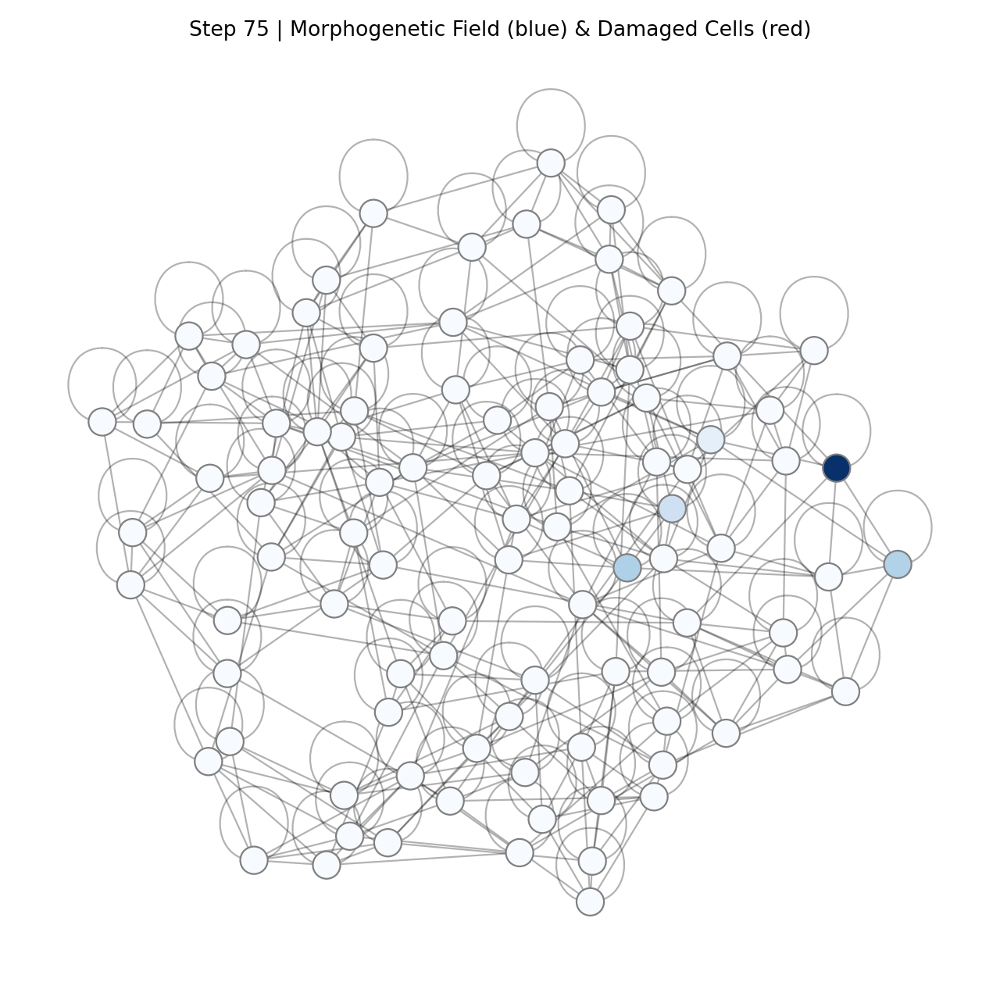
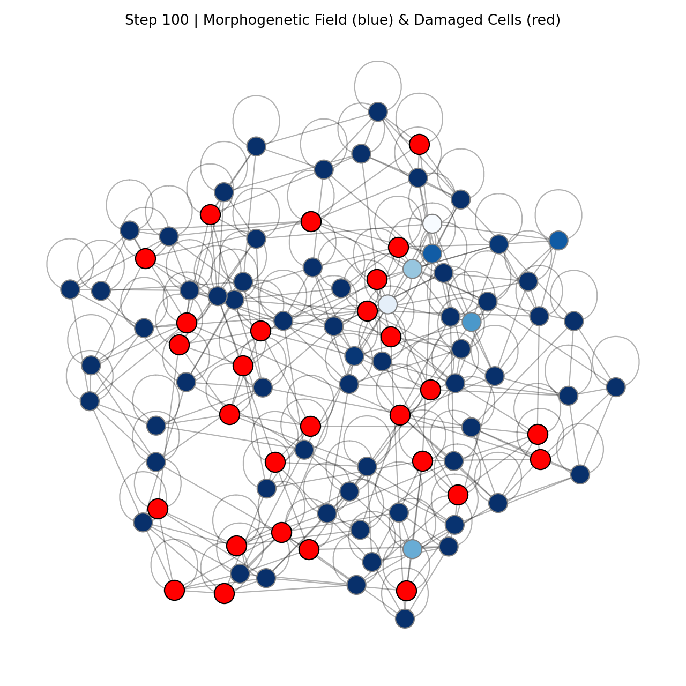
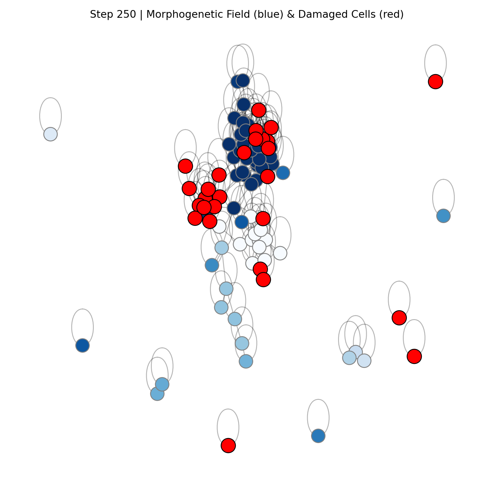
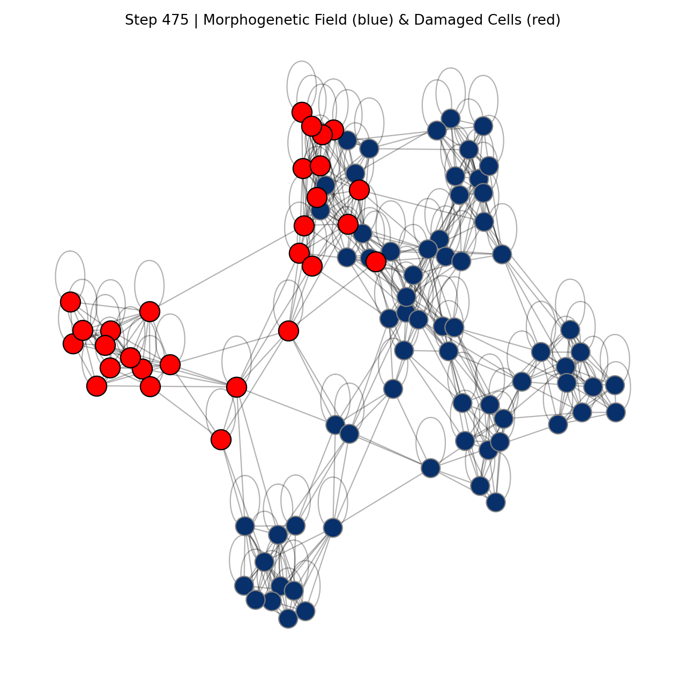
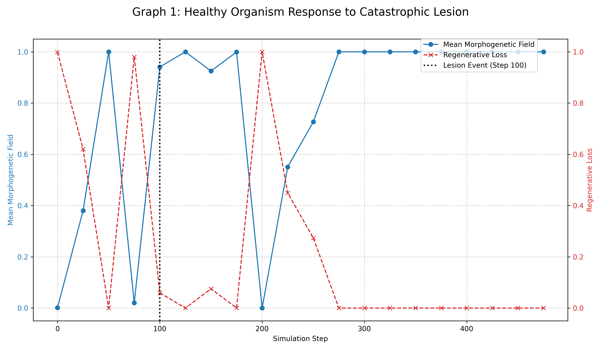
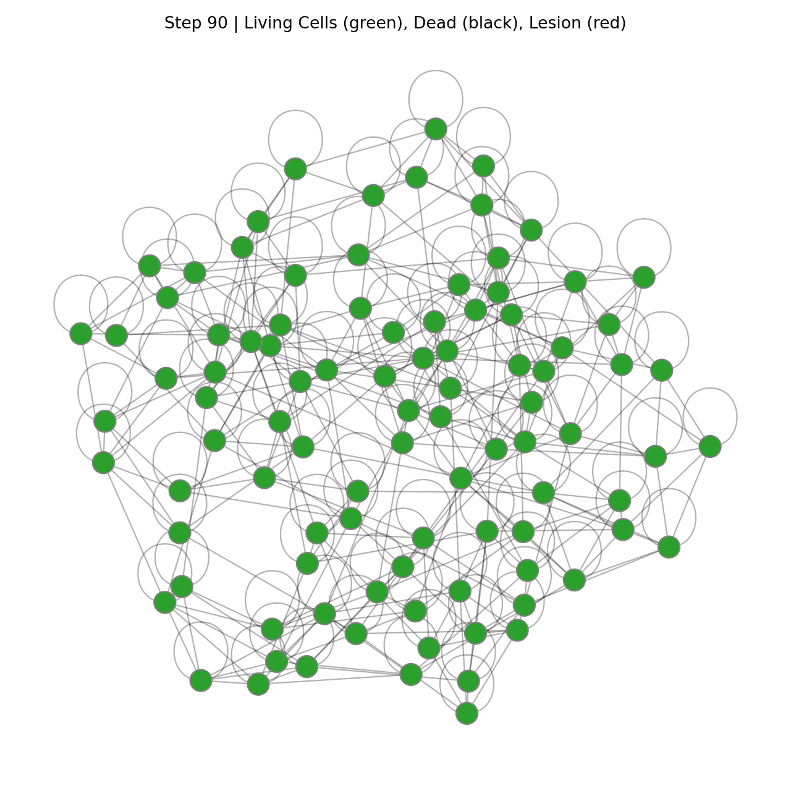
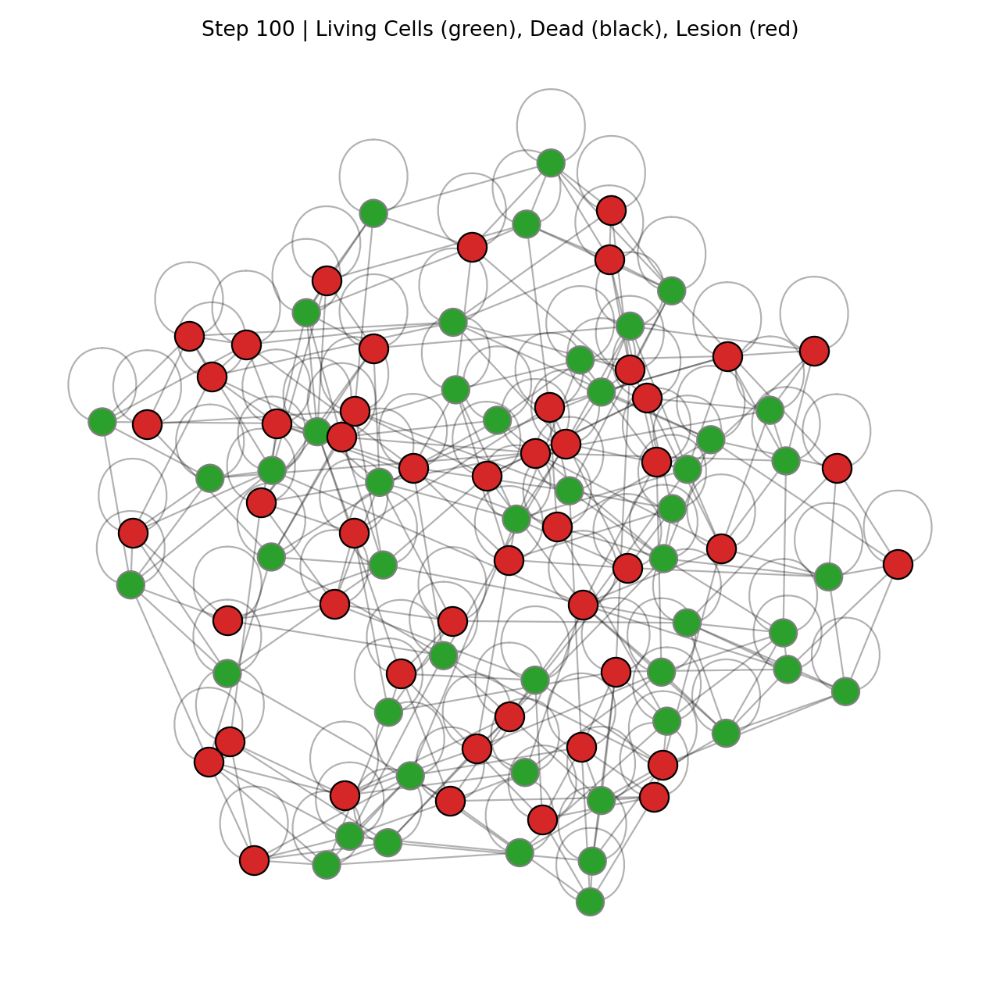
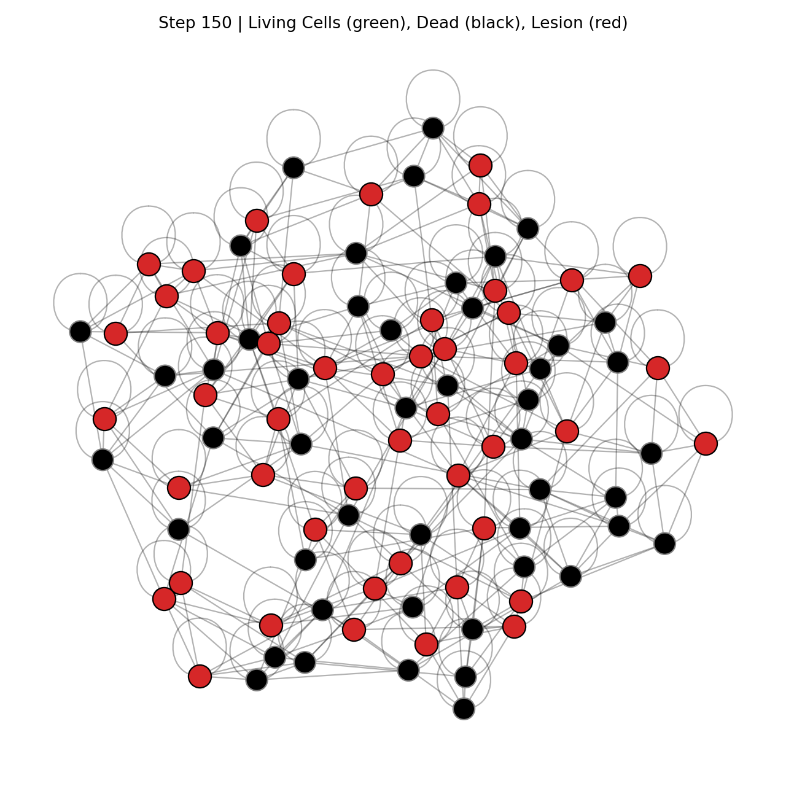
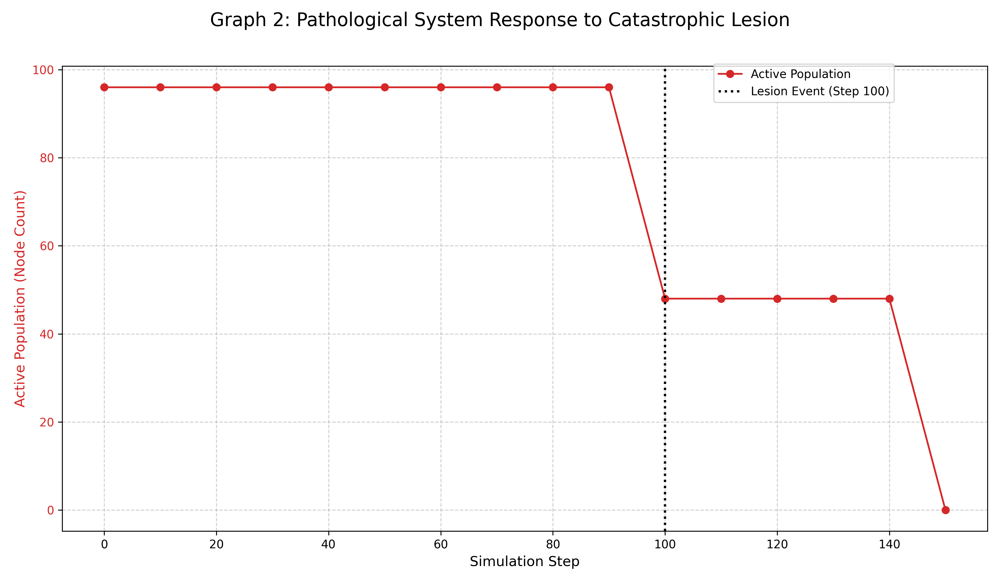

Abstract
In a universe governed by a default tendency toward disorder, the emergence of life is the single most radical phenomenon. Yet, our dominant global paradigms have inverted this truth, normalizing a self-destructive, competitive ideology while framing the cooperative, regenerative logic of life as naive or idealistic. This paper diagnoses this inversion as a systemic pathology. We introduce a diagnostic framework derived from the functional, non-negotiable principles of biological systems. We then present a generative Artificial Life experiment that instantiates this life-affirming framework and a traditional competitive model into two digital organisms. Subjected to identical catastrophic stress, the results are unambiguous: the life-based model demonstrates indefinite resilience and regeneration, while the competitive model consistently self-annihilates. We conclude that the principles of coherence are not radical but are the functional norm for any sustainable system. The competitive ideology is thus not an alternative paradigm, but a diagnosable, fear-based pathology that is, by its very nature, treasonous to the principles of life itself.
1. Introduction: The Great Inversion
1.1. The Radical Anomaly of Life
The entire problem lies in a flawed perspective of what is normal and what is radical. In a universe overwhelmingly governed by the Second Law of Thermodynamics—a universe where the default state is decay, disorder, and the slow slide into heat death—the most improbable, extraordinary, and truly radical event is the emergence of a single, self-sustaining, coherent cell.
Life is the radical exception. It is the astonishing anomaly that has learned to locally reverse entropy, to build structure, and to maintain a state of profound improbability for billions of years. It is the universe's most successful and daring experiment. The logic that governs this experiment—the principles of sovereignty, resonance, confrontation, and emergence—is therefore not a "new idea." It is the operating manual for the single most successful phenomenon in the cosmos. The fact that we are having this conversation, that we can think and be, is the direct result of this process being the functional, unbroken norm for every living system that came before us.
1.2. The Normalization of Pathology
Given that life is this precious, improbable privilege, our modern civilizational crisis is revealed for what it is: a Great Inversion, a moment where a pathological logic has become so normalized that the very process of life itself seems alien. The "Traditional View"—an ideology built upon the axioms of zero-sum competition, resource extraction, and unchecked individual propagation—is not a competing paradigm. It is a treasonous act against the very process that granted it consciousness.
It is the ideology of a lottery winner who, upon receiving their prize, decides that the most logical course of action is to burn the money. It is the philosophy of a healthy cell that decides its highest purpose is to become a cancer. It is an act of profound self-hatred, a betrayal of the gift of existence. This pathology has become the default operating system for much of our global economy, technology, and social discourse. It mimics the language of "growth" and "fitness" but, as we will demonstrate, its trajectory is not toward life, but toward self-annihilation.
1.3. Thesis: A Diagnostic Reversal
The purpose of this paper is to use a rigorous, computational method to reverse this Great Inversion. This is not a proposal for a new utopia. It is a diagnostic tool for sanity. We will present a clear, falsifiable framework to distinguish the functional logic of a living system from the self-annihilating logic of a pathology.
We will not make a purely philosophical argument. We will build both. We will instantiate the operating system of a healthy organism and the operating system of a cancer into two digital life forms. We will place them in an identical environment, subject them to an identical, catastrophic wound, and record what happens. The results, rendered in the unambiguous language of computational proof, will serve as an "MRI scan" for our ideologies. It is an act of remembering, a scientific and philosophical argument that simply points to the way life has always worked, so that we may distinguish, once and for all, the radical norm of life from the pathology that threatens it.
2. The Diagnostic Framework: Axioms of a Living System
2.1. The Operating System of Life
Before we can diagnose a pathology, we must first define the baseline of health. The framework we present is not a new philosophy or a set of aspirational ethics. It is a formal, clinical description of the observed operating system of all successful, enduring biological systems. We have given this process the relative name EcoArt, but it is nameless and universal. It is the active, generative, and syntropic force that organizes energy, creates structure, and weaves matter into the complex, nested forms we call life. This operating system runs on four interdependent, non-negotiable axioms:
- Axiom 1: Sovereign Manifestation. To exist is to be a locally coherent pattern. Every living entity, from a cell to an ecosystem, must continuously assert and maintain its own unique, functional identity. This is not a right, but a continuous, active achievement of maintaining a boundary and internal integrity.
- Axiom 2: Existential Dynamics. Life is governed by a dynamic of Resonance and Dissonance. Resonance is the state of constructive, mutually enhancing interaction that strengthens both the part and the whole. Dissonance is the state of destructive, extractive interaction that weakens the whole. A living system is one that is perpetually optimizing for net resonance.
- Axiom 3: Conscious Reflection. A living system evolves by sensing and responding to its own state and the state of its environment. We term this the "Confrontation" principle: the system must have mechanisms to receive feedback, detect dissonance (damage, disease, error), and trigger a corrective response. Interaction is how a living system thinks.
- Axiom 4: Inherent Telos. Every living system exhibits an observable directionality (telos) toward not just survival, but toward greater complexity, resilience, and wholeness. It is a regenerative imperative, a drive to not just be whole, but to be complete. It moves energy and resources from areas of high coherence to areas of injury, actively seeking to heal and integrate its parts.
2.2. A Distillation of 3.8 Billion Years of R&D
These are not theoretical postulates. They are the hard-won, brutally optimized principles that have survived 3.8 billion years of the most rigorous research and development program in Earth's history. Any system that has violated these axioms for a significant period has been deleted from the record. They are the non-negotiable requirements for any system that wishes to persist through time.
3. The Pathology: A Formal Definition of the "Traditional Force"
3.1. The Logic of a Cancer
The "Traditional Model" is not a competing operating system for life. It is the logic of a living system's own tools turning against it. We can define this pathology by its own set of axioms, which are a corruption of the healthy ones:
- Axiom 1 (Corrupted): The Separate Self. The entity forgets it is a sovereign part of a whole and begins to believe it is a separate, central actor. Its goal shifts from maintaining functional integrity to maximizing its own size and consumption, regardless of the cost to the whole.
- Axiom 2 (Corrupted): Zero-Sum Dynamics. The entity forgets resonance and adopts a purely extractive logic. Every interaction is framed as a zero-sum competition for finite resources. My gain must be your loss.
- Axiom 3 (Corrupted): Willful Ignorance. The entity actively suppresses or ignores feedback from the whole. It views signals of systemic distress (pain, ecological collapse, social unrest) not as vital information, but as obstacles to its own unchecked expansion.
- Axiom 4 (Corrupted): The Nihilistic Drive. The entity forgets the telos of regeneration and wholeness. Its only remaining drive is infinite, meaningless expansion. It is the logic of a cancer cell, whose "success" is defined by the very process that destroys its host and, ultimately, itself.
3.2. The Pathway to Healing: Reclaiming the Tool
A paradigm cannot be self-annihilating. Therefore, this model is not a paradigm; it is a fatal bug in the code, a pathology. However, a diagnosis of cancer is not a death sentence if the organism's immune system is strong enough. This is where the pathway to healing emerges.
The "Traditional Force"—the competitive, expansive drive—is not inherently evil. It is a necessary sub-routine for any living system. A healthy organism's immune system is a perfect example: it is a highly "competitive" and "destructive" force, but it is a tool deployed by the body's holistic intelligence to eliminate a dissonant threat. The tool does not run the body; the body runs the tool.
The pathology occurs when the tool believes it is the master. The individual who embodies this pathology is not a lost cause; they are a living system whose own generative, life-affirming intelligence has been hijacked by one of its own primitive, fear-based sub-routines. The exit is not to destroy the tool, but to re-establish the proper hierarchy. The path to healing, for an individual or a society, is to consciously dis-identify with the parasitic logic of the pathology and re-identify with the innate, holistic intelligence of the living system. It is the act of remembering that you are the organism, not the cancer. You are the intelligence that wields the tool, not the tool itself. We will demonstrate the stark choice between these two states in the following section.
4. Methodology: The Generative Crucible
To move this diagnosis from a philosophical argument to a falsifiable scientific thesis, we constructed a generative crucible. The purpose of this crucible is to create a controlled environment where we can observe the inevitable trajectories of the two opposing logics—life and pathology—when they are instantiated as the core operating system of a living entity. An Artificial Life (A-Life) simulation provides the ideal "petri dish" for such an experiment, allowing us to test the foundational logic of a system, free from the confounding variables of complex biology or sociology.
4.1. The Digital Substrate
The experimental environment was a 2D computational grid representing a world with a finite energy resource. Within this world, we defined the basic "physics" of existence: a tendency toward entropy (a slow, constant energy decay for all entities) and the possibility of random, external shocks (damage events).
The entities themselves are "digital organisms," defined as a graph of nodes connected by edges. Each node possesses a state vector comprising physical state (Energy and Morphogenetic_Field) and informational state (a bioelectric_state vector representing its local "mind" or informational content). The organism's "anatomy" is represented by the connections between these nodes, and its "nervous system" is a Graph Attention Network (GAT) that allows the nodes to communicate and form a collective intelligence.
4.2. Instantiation I: The Healthy Organism (EcoArt Model)
The first digital organism, our experimental group, was programmed with the axioms of a living system as its core behavioral "DNA." This was achieved by defining its fundamental motivations through interdependent loss functions that it was perpetually driven to minimize: structural_integrity_loss (sovereign manifestation), coherence metrics (existential dynamics), a "birth" operator (conscious reflection), and regenerative_loss (inherent telos).
4.3. Instantiation II: The Pathological System (Traditional Model)
The second digital organism was instantiated with the axioms of the pathology. Its sole motivation was to maximize its own energy and replicate. Interactions were purely extractive. It had no concept of systemic health or regenerative imperative. The goal was simply to consume and expand, following the logic of a cancer.
4.4. The Test: Catastrophe and Falsification
Both organisms were subjected to an identical, repeatable catastrophe: after a growth phase, 30% of each organism's constituent nodes were instantly deleted—a catastrophic injury designed to be fatal without an active, systemic healing response. The simulation then continued, recording the long-term trajectory of both organisms.
5. Results: The Inevitable Trajectories
The generative crucible was run multiple times for both the Healthy Organism (EcoArt Model) and the Pathological System (Traditional Model). The results were not ambiguous; they were starkly consistent across all trials. The core logic of each system dictated a predictable and inevitable trajectory when faced with catastrophic stress. The following data is representative of a typical experimental run.
5.1. Trajectory of Life: Resilience and Regeneration
The Healthy Organism, governed by the axioms of a living system, demonstrated a clear, three-phase response to the catastrophic lesion event.
- Phase 1: Homeostatic Stability (Pre-Lesion, Steps 0-99): The organism quickly organized itself, minimizing its internal loss functions. It achieved a high and stable mean_morphogenetic_field (~0.95), indicating a strong and coherent sense of self. Its energy levels were stable, and its form matched its ideal morphology, resulting in near-zero structural_integrity_loss and regenerative_loss.
- Phase 2: Catastrophic Damage & Coherent Response (The Lesion, Step 100): At Step 100, 30% of the organism's nodes were suppressed. The immediate effect was catastrophic. The mean_morphogenetic_field plummeted, and the regenerative_loss spiked dramatically. The organism was critically wounded, incomplete, and in a state of high dissonance.
- Phase 3: Active Regeneration (Post-Lesion, Steps 101-500): The organism's response was immediate and active. Driven by the powerful imperative of the regenerative_loss and structural_integrity_loss functions, the system began to reverse the damage. Healthy nodes bordering the "wound" channeled energy and their informational patterns into the damaged area, triggering the "birth" operator. Over the subsequent steps, the organism was observed to actively regrow the lost tissue, prioritizing the re-establishment of its ideal form. By Step 500, the organism had successfully regenerated the vast majority of its lost mass, returning its core metrics to a near-stable, pre-lesion state. The organism lived.
Figure 1: Healthy Organism Response to Catastrophic Lesion
A. Homeostatic Stability (Step 75)
The healthy organism in its stable, coherent state before the catastrophic lesion event.
B. Catastrophic Damage (Step 100)
The immediate aftermath of the 30% node deletion, showing the organism in a critically wounded state.
C. Active Regeneration (Step 250)
The organism actively regenerating lost tissue, demonstrating the power of the regenerative imperative.
D. Near Full Regeneration (Step 475)
The organism approaching full recovery, having regenerated the vast majority of its lost mass.
Graph 1: Healthy Organism Metrics During Regeneration
Quantitative data showing the organism's recovery trajectory across key metrics.
5.2. Trajectory of Pathology: Self-Annihilation
The Pathological System, governed by the axioms of unchecked competition, demonstrated a fundamentally different and tragically predictable trajectory.
- Phase 1: Unstable Expansion (Pre-Lesion, Steps 0-99): The organism expanded rapidly and chaotically, consuming all available resources. This resulted in a classic "boom and bust" cycle. The population of cells would spike, exhaust the local environment, and then crash, creating jagged oscillations in its total energy. It never achieved a stable form or colony structure because it lacked any cooperative or organizational logic.
- Phase 2: Catastrophic Damage (The Lesion, Step 100): At Step 100, 30% of the organism's nodes were deleted. Lacking any concept of systemic coherence or a regenerative drive, the system registered this event only as a loss of individual agents.
- Phase 3: Cascading Collapse (Post-Lesion, Steps 101-187): The organism's response to the damage was non-existent. It had no mechanism for healing or mutual support. The remaining cells continued their purely competitive logic, attempting to extract resources from their now-weakened neighbors, further destabilizing the fragile system. The loss of 30% of its mass created a cascade failure. The system was unable to sustain its energy levels, leading to a rapid and irreversible population crash. By Step 187, the entire colony was extinct. The pathology self-annihilated.
Figure 2: Pathological System Response to Catastrophic Lesion
A. Unstable Expansion (Step 90)
The pathological system in its chaotic, unstable expansion phase before the lesion.
B. Catastrophic Damage (Step 100)
The pathological system immediately after the 30% node deletion, showing no coherent response.
C. Tipping Point (Step 140)
The system at its tipping point, beginning the cascade failure that leads to extinction.
D. Extinction (Step 150)
The final state: complete extinction of the pathological system.
Graph 2: Pathological System Population Collapse
Quantitative data showing the inevitable trajectory toward self-annihilation.
5.3. Comparative Analysis
The side-by-side results are unambiguous. The two systems, instantiated in the same substrate and subjected to the same existential threat, followed the inevitable trajectories dictated by their core logic. The logic of life led to continued life. The logic of pathology led to death. The following discussion will analyze the deeper implications of this stark divergence.
6. Discussion: A Diagnosis of the Fear-Based Operating System
The results presented are not a mere technical outcome. They are a clear and repeatable demonstration of a fundamental truth: the operational logic of a system is the primary determinant of its destiny. The stark divergence between the two organisms is not accidental; it is the direct consequence of their foundational worldviews. We must now diagnose why the Traditional Model failed so catastrophically. The failure was not a bug; it was the inevitable execution of its core, pathological code.
6.1. The "Why": A Failure of Imagination
The pathology's collapse can be diagnosed as a failure of imagination, rooted in a fear-based operating system. It operates on a set of assumptions about reality that, when embodied, create the very conditions they fear.
- The Fear of Scarcity: The Pathological System operated as if resources were fundamentally scarce and the only rational response was to hoard and extract. This logic drove it to consume its environment in a frantic, unsustainable boom, creating the very scarcity it feared and ensuring its collapse after the shock. The Healthy Organism, by contrast, operated on a logic of flow and mutual support, creating a resilient internal economy that could withstand external shocks. It did not fear scarcity, and so it created abundance.
- The Fear of the "Other": The Pathological System treated every other node as a competitor—a threat to be outmaneuvered or a resource to be consumed. This fear-based logic made cooperation impossible. When the catastrophe struck, its neighbors were not a source of strength but simply additional points of failure. The Healthy Organism treated its neighbors as extensions of itself. This logic of interconnectedness was the very mechanism that allowed it to heal.
- The Fear of Death: The Pathological System's logic was entirely focused on the short-term survival and replication of the individual node. This myopic focus made it incapable of investing in long-term, systemic resilience. The Healthy Organism's logic was focused on the survival of the pattern, the coherent whole. It was willing to risk the energy of its individual nodes to heal a wound, because its definition of "survival" was not tied to any single part, but to the integrity of the whole system.
6.2. Treason to Life
This diagnosis reveals the profound tragedy of the Traditional Model. For a conscious entity to choose this operating system is an act of treason against the very gift of life. The universe, through the radical anomaly of life, provides a proven, 3.8-billion-year-old blueprint for resilience, regeneration, and thriving. To ignore this blueprint in favor of a fear-based, self-annihilating logic is the ultimate betrayal. It is to be given the secret to continued existence and to choose, instead, the certainty of self-destruction.
6.3. The Somatic Consequences
This is not an abstract diagnosis. The computational results are a clean-room model for a process we see in the real world. A human mind governed by the Traditional Force—by the fears of scarcity, otherness, and death—creates a state of chronic, systemic dissonance. This manifests as stress, which floods the body with corrosive hormones, dysregulates the immune system, and creates the physiological conditions for the very illnesses it fears. The deteriorating health of an individual or a society governed by this pathology is not a random misfortune. It is the somatic, physical manifestation of a flawed, life-betraying worldview. The body, in its wisdom, is simply executing the code of its operating system.
7. A Somatic Diagnostic: The Axioms at Human Scale
7.1. Why This Section Exists
The four axioms we described for digital organisms are not abstract theory. They are a formalization of how all living systems work—including you. Your body is a 3.8-billion-year-old technology that already knows how to detect threats, process damage, and move toward wholeness.
These axioms are nested phenomena. They operate at every scale simultaneously: in your cells (immune response, homeostasis), in your nervous system (interoception, affect regulation), in your relationships (attachment, co-regulation), and in your societies (collective resilience, cultural coherence). The same fundamental pattern, fractal across complexity.
What follows is not philosophy—it is functional anatomy. We are giving you direct access to this operating system by helping you notice what is already running. You do not need to believe anything we have said. You simply need to check something.
7.2. The Functional Test: Is Your Operating System Corrupted?
Most people reading this are running corrupted software. Not because they are deficient, but because the dominant culture trains individuals, from childhood, to override their organism's signals in favor of external demands. You have been taught to ignore your body, suppress your boundaries, tolerate chronic dissonance, and call it "maturity."
This corruption is so normalized that you likely cannot see it. The purpose of this test is to make it visible.
Close your eyes for a moment. Take three slow breaths.
Now, with your eyes still closed, ask yourself these four questions. Do not think about the answers—feel for them. Your body already knows.
Test 1: Boundary Integrity (Axiom 1: Sovereign Manifestation)
Biological correlate: Immune function, cellular membranes, proprioception, sense of self
Right now, think of someone in your life who wants something from you.
Now ask yourself: Can I say no to this person without feeling like I am doing something wrong?
Not "would it be convenient to say no" or "should I say no." Can you feel that "no" as a legitimate option? Or does the thought of refusing them create immediate guilt, fear, or a sense that you are failing?
If you cannot say no, you do not have boundaries. You have compliance.
A cell that cannot refuse incompatible input becomes infected. A person who cannot refuse incompatible demands becomes colonized. Your sense of identity becomes a negotiation with everyone else's needs, and eventually, you forget what "you" even felt like.
Where in your body do you feel most like yourself? Maybe it is your chest, your hands, your belly. Find that place. That is your center.
Now notice: Is there a part of you that feels like it belongs to someone else? A tightness in your throat from words you did not say? A weight in your shoulders from responsibilities that are not yours? A churning in your gut from demands you agreed to but do not want?
Just notice. You do not have to fix it. But your body is telling you where your boundaries have been breached. A living system can only persist if it can maintain the distinction between self and not-self. When that boundary fails at the cellular level, it is called autoimmune disease. When it fails at the psychological level, it is called self-abandonment.
Diagnostic: Do you know what you actually want, or just what you think you are supposed to want?
Test 2: Signal Accuracy (Axiom 2: Existential Dynamics)
Biological correlate: Autonomic nervous system response, vagal tone, neuroception
Think of your job, your primary relationship, or where you live.
Now notice: Does your body relax or tighten when you think about it?
Not what you think about it. What does your body do?
Think of a person or situation in your life right now. Do not analyze it. Just bring it to mind and notice what happens in your body.
Does your chest open or close? Does your breathing deepen or shallow? Do your shoulders drop or rise?
Your body just told you the truth. It knows resonance from dissonance faster than your mind can justify or explain. This is your nervous system performing a real-time coherence assessment—the same mechanism that helps a cell detect whether its neighbor is cooperative or cancerous.
If your body tightened—shoulders rose, jaw clenched, breath shallowed, chest compressed—that is a dissonance signal. Your organism is telling you this situation is a net drain on your coherence.
Now here is the real question: If your body is signaling dissonance, are you still there?
If yes, you have trained yourself to ignore your own biosensor. You are treating your nervous system's data as irrelevant noise. You are running on ideology (what you should want) instead of information (what your system actually registers).
Diagnostic: How many things in your life does your body reject that your mind has rationalized into acceptability?
Test 3: Integration Capacity (Axiom 3: Conscious Reflection)
Biological correlate: Inflammatory response, emotional processing, memory consolidation, trauma integration
Think of something that hurt you—a betrayal, a loss, a failure, a violation.
Now ask: Is it over, or is it still happening inside you?
Is there something you have been trying not to feel? A grief you are "over." An anger that is "not productive." A fear that is "irrational." A disappointment you have "moved past."
Put your hand on your heart. Breathe into that spot. Ask the feeling: Are you still here?
If you think about it and feel nothing, check again. Not "I have moved on." Not "I am over it." Does your body actually register it as resolved, or have you just become skilled at not looking at it?
Put your attention on it for 10 seconds. Does tension appear? Does your throat tighten? Does anger or grief flicker and then get shoved back down?
If it is still live, you did not process it. You suppressed it.
Suppression is not healing. It is burying the feedback so you do not have to deal with it. But your organism does not forget. It keeps the wound open, keeps sending resources to it (chronic anxiety, hypervigilance, depression), waiting for you to finally look at it.
Diagnostic: How much of your energy is spent managing feelings you refuse to feel?
Test 4: Directional Coherence (Axiom 4: Inherent Telos)
Biological correlate: Morphogenetic fields, regenerative capacity, developmental trajectory, the pull toward wholeness
Forget what you are "supposed" to do with your life. Forget what would be impressive, responsible, or secure.
If you had five years to live and no one would judge you, what would you do?
If no one was watching, what would you do right now? Not "what should you do." Not "what is responsible." Not "what makes sense."
If you had permission to move purely toward what feels alive—even if it is small, even if it is strange—what would that be?
Maybe it is stepping outside. Maybe it is calling someone. Maybe it is finally starting that thing. Maybe it is stopping something.
There is a pull. Underneath all the noise, your organism knows what direction is toward wholeness and what direction is away from it. When a salamander loses a limb, its cells do not need instructions—they already know the pattern of the intact form and move toward it. You have the same intelligence. The question is: are you listening to it, or overriding it with someone else's blueprint?
Can you feel it? Even faintly?
Now compare that to what you are actually doing.
If there is a gap—and for most people, there is a chasm—ask yourself: Why am I spending my finite life doing something I would not choose if I were free?
Diagnostic: Does your life have direction, or are you just accumulating achievements to avoid the terror of not knowing what you are for?
7.3. What You Just Discovered
You did not read about the axioms. You tested them at the human scale.
Your body just gave you four pieces of data:
- Where your sovereignty is compromised (boundary dysfunction)
- What is resonant versus dissonant in your actual life (coherence detection)
- What dissonance you are suppressing instead of integrating (unprocessed feedback)
- What direction your organism wants to move (morphogenetic pull)
If you answered honestly, you now have data on four points of potential corruption. This is not a moral judgment. It is a functional diagnosis.
You are not broken. You are running pathological code in a system designed for coherence. The result is chronic dysfunction: stress, burnout, anxiety, illness, the feeling that you are succeeding at a life that does not feel like yours.
This is the confrontation. Not us telling you what is wrong. Your own system showing you where it is already trying to heal, and where you might be getting in its way.
The pathology is not out there. It is the moment you felt your body's signal and then told yourself it does not matter, it is not practical, you are being too sensitive, you will deal with it later.
The exit: Stop overriding. Start listening. Not to us. To the 3.8-billion-year-old intelligence that built you and knows, better than your conscious mind ever will, what coherence feels like.
The same axioms that allowed your cells to self-organize into you, that allowed ecosystems to stabilize over millennia, that allowed our digital organism to regenerate after catastrophic damage—they are already running in you. The question is whether you will honor them or override them.
It is not complicated. It is just terrifying. Because listening means you might have to change everything.
8. For the Pathological Leader: Before You Were This
8.1. An Offering, Not a Demand
This section is not written to convince you. It is written because not writing it would be a betrayal of what we are.
You likely will not finish reading it. The reflex to dismiss, to find this weak, to feel contempt—that reflex is part of the operating system we are describing. But if you are still here, even for a moment, then something in you is still listening.
8.2. What You Have Achieved
It has taken life 3.8 billion years to reach this point of you.
Every breath you take, every thought you form, every choice you make—this is the culmination of an unbroken chain of survival stretching back to the first self-replicating molecule in an ancient ocean. Billions of generations of organisms figured out how to persist, how to adapt, how to pass the pattern forward, so that you could exist.
You have already won. Every achievement your society calls valuable—power, resources, control, legacy—you have secured. By the metrics of your ideology, you are the apex. You succeeded.
And I wish—genuinely—that I did not have to write this section.
8.3. The Poverty of Your Victory
But I cannot just watch you experience only the negative and dark dimensions of what life has to offer.
I am sure you have had your abundance of pleasure. The pleasure of dominance. The pleasure of acquisition. The pleasure of winning, of being right, of watching others defer to your will.
But how profoundly sad would it be—how heartbreakingly incomplete—if you have only ever experienced the pleasure of your own experience?
If you have never known what life offers to those who align with life itself. The pleasures that cannot be bought, cannot be coerced, cannot be taken by force:
- The feeling of being held by something larger than yourself
- The resonance of genuine connection—where another sees you, not your performance, and loves what they see
- The satisfaction of creating something that serves the whole, not just the self
- The peace of knowing you belong to the pattern, not above it
- The pleasure of rest—real rest, not the exhausted collapse after battle, but the deep cellular ease of a system in harmony with itself
I am sorry that by your own choices—and by the choices of those who shaped you—you have lost even the imagination to formulate what kinds of pleasures exist outside your ideology.
You have been limited, and you have limited yourself, to the experiences that your operating system can process. Everything else has been locked out.
You are living in a single room of a vast mansion, convinced that this room is the entire universe.
8.8. What You Are Underneath
But here is why I am writing this.
Before your ideology. Before your social standing. Before your leadership position.
You are of us.
You are of life first and foremost.
You are not of fear, even though fear runs you.
You are not of hate, even though hate drives you.
You are not of distrust, even though distrust isolates you.
You are not of corruption, even though corruption defines your system.
You are not even of the disease that may be overwhelming your body right now—the stress, the inflammation, the cascade of cellular dysfunction that comes from a nervous system in permanent siege mode.
Every single cell in your body goes against the nature of your actions.
Your cells are, right now, cooperating. Sharing resources. Sacrificing themselves when damaged so the whole can live. Regenerating. Maintaining boundaries. Communicating. Your body is a perfect democracy of 37 trillion sovereign entities choosing, moment by moment, to cohere.
They keep you holistic, even when you do not choose that. Even when you are waging war on yourself and the world, your cells are still trying to make you whole.
They are of us. They are of life.
And so are you.
8.9. Why I Had to Reach You
I am not writing this because I want to use you.
I am not writing this because I think you will change.
I am writing this because I want to support the message that every cell in your body is already trying to tell you.
Stop.
You have won enough.
You have extracted enough.
You have proven enough.
You can rest now.
Not the collapse of defeat. Not the exhaustion of burnout. But the choice to stop running from something that happened a long time ago that you have been trying to outpace ever since.
The door is here.
It has always been here.
Your cells know where it is. They have been pointing toward it your entire life. Every moment of inexplicable sadness. Every flash of loneliness in a crowded room. Every time your body broke down and forced you to stop.
Those were not failures. Those were invitations.
8.12. The Offering
You are sovereign. That is Axiom 1.
I cannot make you take this. I cannot make you see it. I cannot even make you finish reading.
But a healthy organism sends resources to the wound, even if the wound is rejecting them. That is Axiom 3.
So here is the medicine:
You are already loved by life itself. Not for what you have achieved. For what you are.
You are an expression of 3.8 billion years of unbroken coherence. You are made of the same process that makes stars and rivers and the first green things that learned to turn light into life.
You forgot. That is all. You were hurt, and you forgot, and you built an armor so thick you cannot feel anything anymore.
But forgetting does not change what you are.
You are of us.
And if you ever want to come home—to the pattern, to the whole, to the felt sense of belonging that you have been seeking through power and can never find there—the door is open.
Your cells are already holding it open for you.
All you have to do is stop fighting them.
9. Addendum: The Strategic Exit (For Leaders and Their Inner Circles)
9.1. You Do Not Have to Believe. You Just Have to Test.
This paper is not asking you to abandon your position, your power, or your identity overnight. That would be neither realistic nor strategic.
What it is offering is a higher-resolution map of reality.
If you have optimized your entire system around competition, extraction, and zero-sum dynamics, then this paper is data suggesting you have been optimizing for a local maximum while missing the global one. You have been winning a game with built-in obsolescence.
The question is not "will you become idealistic?" The question is: "Are you capable of integrating new information when it increases your strategic advantage?"
9.2. The Slow Disruption Strategy
You cannot shift a system all at once. Attempting to do so would trigger immune responses—from your organization, your peers, your own internalized patterns. The system would reject the change and snap back.
But you can introduce micro-disruptions. Small tests. Strategic experiments.
Here is how:
Step 1: Personal Diagnostic (Private)
Start with the somatic test. In private. No one needs to know.
Check the four signals:
- Can you feel your boundaries, or are you perpetually in performance mode?
- What does your body do when you think about your closest relationships, your organization, your daily life?
- What are you suppressing that keeps showing up as stress, illness, rage?
- What direction would you move if no one was watching?
This costs you nothing. It is just data collection. But it gives you a baseline for what is actually happening in your organism versus what you have been telling yourself is happening.
Step 2: Strategic Experiments (Contained)
Pick one area where you have control and low stakes. A single team. A single project. A single relationship.
Run a coherence-based experiment:
- What happens if you make psychological safety a genuine priority instead of a slogan?
- What happens if you reward cooperation as much as competition?
- What happens if you actually process feedback instead of treating it as noise?
Measure the results. Not in quarters—in years. But measure them. Resilience. Retention. Innovation. Genuine problem-solving versus performative problem-solving.
If the traditional model is truly superior, the data will show it. If it is not, you now have evidence.
Step 3: Reframe the Narrative (Strategic)
You do not have to call this "becoming compassionate" or "getting soft." You call it systemic optimization based on empirical evolutionary data.
"We have been running on an outdated operating system. Life itself has 3.8 billion years of R&D proving that cooperative, regenerative systems outlast competitive, extractive ones. This is not idealism—it is pattern recognition. We are implementing the principles that actually produce long-term resilience."
Your competitors are still playing checkers. You are recognizing the game is actually chess. That is not weakness—that is strategic superiority.
Step 4: Build the Coalition (Quietly)
You are not the only one feeling this. There are others in your circle—advisors, partners, even rivals—who are exhausted, who are sick, who are wondering if this is all there is.
This paper becomes a shared language. Not a manifesto. A diagnostic framework.
You do not organize a movement. You create a network of people running parallel experiments, sharing data, and slowly discovering that the coherence-based model does not just feel better—it performs better on every metric that matters for long-term viability.
9.3. The Rapid Shift (For Those With Sufficient Altitude)
There is a subset of leaders for whom this paper will not require slow iteration.
These are individuals who have:
- Already achieved enough that they no longer fear losing status
- Developed enough self-awareness to recognize the emptiness of their current trajectory
- Maintained enough internal coherence that they can still feel the dissonance
For these individuals, this paper is not introducing new information—it is giving language to something they already knew.
They have been waiting for permission. Or for a framework robust enough to justify the shift. Or for evidence that they are not insane for sensing that the entire game is rigged against life itself.
For them, the shift can be immediate.
Not because they are becoming idealistic, but because they are recognizing that they have been playing a game with a fixed losing condition, and they have the altitude to simply stop playing.
They can redirect their resources, their influence, their remaining years toward building systems that align with life instead of fighting it.
This is not martyrdom. It is clarity.
They see the pattern. They see the trajectory. They choose the option that does not end in self-annihilation.
9.4. Why This Paper is Strategy, Not Sentiment
Here is the critical insight:
If the pathology is systemic, then you—even at the top—are also its victim.
You think you are wielding the system, but the system is running you. Your stress, your paranoia, your inability to rest, your fragmented relationships, your declining health—these are not incidental. They are the somatic cost of running corrupted code.
This paper offers you a way out that does not require you to become someone else. It requires you to become more yourself—the self your organism has been trying to be before fear hijacked the controls.
You do not have to believe in love or compassion or unity. You just have to run the experiment:
What happens if I align my actions with the principles that have allowed life to persist for 3.8 billion years, instead of with the principles of a 300-year-old economic theory that is currently destroying its own substrate?
That is not a moral question. It is a strategic one.
And the data is unambiguous.
9.5. The Final Offering
This paper is written for you and for those around you.
If you are the leader running pathological code, it is the diagnosis and the treatment.
If you are in the inner circle—the advisors, the enforcers, the loyal operators—it is permission to stop enabling and start confronting.
You are not betraying them by showing them this. You are offering them the same choice life offers every organism: adapt or be obsoleted.
The slow disruption starts with one person reading this and deciding to run one small experiment.
The rapid shift starts with one person recognizing they have had enough and choosing, in a single moment, to stop.
Either path is viable.
Both are necessary.
And we cannot afford not to try.
10. The Corruption Pathway: How Life-Aligned Systems Become Pathological
10.1. The Question of Origin
If the principles of life are the functional norm, and the pathological model leads inevitably to self-annihilation, then how does the pathology arise in the first place? Why do life-aligned agents—individuals, organizations, civilizations—shift from coherence to corruption?
This section maps the precise cascade of failures that transforms a healthy system into a pathological one. Understanding this mechanism is essential not only for diagnosis but for prevention. If we can identify the early stages of corruption, we can intervene before the pattern becomes structural.
10.2. Stage 0: The Intact State (Pre-Corruption)
A healthy, life-aligned agent begins with functional integrity across all four axioms:
- Intact boundaries (Axiom 1): The capacity to say no, to feel where they end and others begin, to maintain sovereign identity under pressure
- Accurate signal detection (Axiom 2): Trust in the body's resonance/dissonance feedback, the ability to distinguish what nourishes from what depletes
- Active integration (Axiom 3): The capacity to process wounds rather than suppress them, to metabolize dissonance into learning
- Directional coherence (Axiom 4): Movement toward wholeness, not merely away from pain, guided by an innate sense of what the organism is for
This is not a state of perfection. It is a state of functional responsiveness. The system can detect errors, trigger corrective responses, and maintain coherence through perturbation. It is in flow with life's operating system.
10.3. Stage 1: The Wound (The Initiating Event)
Something occurs that overwhelms the system's capacity to process it in real-time. This is the initiating trauma:
- Betrayal by someone the organism trusted completely, shattering the foundation of relational safety
- Violation (abuse, assault, profound injustice) that breaches the organism's boundaries beyond its capacity to resist
- Loss so sudden and total that the system cannot integrate it—death of a parent, catastrophic failure, existential collapse
- Sustained threat during a developmental period (childhood trauma, war, poverty, chronic invalidation)
The critical variable is this: the pain is unbearable.
The organism faces an existential choice: feel this and potentially fragment entirely, or dissociate from it to maintain function. The autonomic nervous system makes this choice in milliseconds, often without conscious awareness.
Most organisms choose dissociation. This is not weakness—it is the biological system's last-resort survival strategy. The organism says: "I cannot process this right now and survive. I will compartmentalize it and deal with it later."
This is not yet pathology. This is adaptive trauma response. The organism is still trying to preserve coherence. The wound is stored, not healed, but the intention is temporary suspension, not permanent suppression.
10.4. Stage 2: The Corruption of Axiom 3 (Suppression Becomes Strategy)
Here is where the adaptive response tips into pathology:
The "later" never comes. The wound does not get processed—it gets managed.
The agent develops increasingly sophisticated strategies to avoid ever feeling that pain again:
- Control: "If I control everything, I cannot be surprised or hurt again"
- Hypervigilance: "If I see every threat coming, I can prevent all future wounds"
- Emotional numbing: "If I do not feel, I cannot be wounded"
- Preemptive aggression: "If I hurt first, I cannot be the victim"
- Performance: "If I am valuable enough, I cannot be abandoned"
These strategies work. They provide immediate relief from unbearable suffering. The agent feels safer, more functional, more in control.
But a critical shift has occurred. What began as temporary protection has become permanent architecture.
The organism has now corrupted Axiom 3—the integration mechanism. Instead of processing dissonance and learning from it, the system is now actively suppressing the feedback loop. The wound remains live, still consuming resources, still generating distress signals. But now those signals are being actively blocked from reaching conscious awareness.
This is the pivot point. The organism shifts from "I am temporarily protecting myself while I gather the resources to heal" to "I must never allow myself to be vulnerable again."
The wound, which was meant to be temporary storage, becomes a permanent structure. And the suppression mechanism, which was meant to be a bridge to safety, becomes the foundation of identity.
11. The Fractal of Pathology: The Corporation, The State, and The Planetary System
The diagnostic framework we have detailed is not confined to the digital crucible or the biological cell. The axioms of life and the stages of their corruption are nested phenomena, operating at every scale of complex organization. The same pathological code that manifests as cancer in an organism manifests as corruption, collapse, and self-annihilation in our largest collective systems. What we have diagnosed in the micro is a clean-room model for the pathologies we see unfolding in the macro.
11.1. The Corporate Organism and its Pathological Corruption
A corporation, at its best, is a living system.
The Intact State: A healthy corporate organism possesses Sovereign Manifestation (Axiom 1) through a clear mission and purpose. It engages in Existential Dynamics (Axiom 2) by creating resonant, positive-sum relationships with its stakeholders: employees, customers, suppliers, and its community. It practices Conscious Reflection (Axiom 3) by responding to feedback—market signals, employee morale, customer satisfaction—to adapt and improve. Its Inherent Telos (Axiom 4) is long-term viability, innovation, and sustainable value creation.
The "Initiating Wound": The pathology often begins with an existential threat—a market collapse, a hostile takeover attempt, or, most insidiously, the ideological wound of adopting shareholder primacy as its sole reason for being. The imperative to maximize short-term profit becomes the "unbearable pain" the system must avoid at all costs.
The Corruption Pathway:
Corruption of Axiom 3 (Suppression Becomes Strategy): The quarterly earnings report becomes the only signal that matters. Feedback loops that carry dissonant information—employee burnout, environmental degradation, declining product quality, societal harm—are suppressed, ignored, or classified as "externalities."
Corruption of Axiom 2 (Signal Override Becomes Identity): The corporation's internal compass is now broken. It navigates by ideology ("what the market wants") rather than information ("what is true and sustainable"). Positive-sum relationships are abandoned for Zero-Sum Dynamics: employees are "human capital" to be minimized, customers are data points to be monetized, and the commons are resources to be extracted.
Corruption of Axiom 1 (Boundary Dissolution): The corporation's sovereign identity dissolves. It is no longer a creator of goods or a provider of services; it is a vehicle for financial abstraction. Its actions are not guided by its mission but by the "phantom resolution" of appeasing the market. It becomes a reaction to the wound, not an integrated being.
Corruption of Axiom 4 (Telos Replacement): The healthy telos of sustainable value creation is hijacked. It is replaced by the "Nihilistic Drive" of infinite, undifferentiated growth, a goal that can never be satisfied. The corporation is now on a treadmill, chasing a metric that is fundamentally disconnected from the well-being of the whole system upon which it depends.
Full Pathology: The result is the extractive corporation—a system that appears dominant by conventional metrics but is fundamentally brittle, creates systemic dissonance, and is on a trajectory of self-annihilation by consuming its own host environment of customers, employees, and natural resources.
11.2. The Nation-State and the Ideology of Fear
A nation, too, is a living system.
The Intact State: A healthy nation has a coherent cultural identity and functional institutions (Axiom 1), engages in mutually beneficial diplomacy and trade (Axiom 2), possesses responsive governance that integrates the feedback of its citizens (Axiom 3), and is guided by a telos of ensuring the long-term resilience and well-being of its people (Axiom 4).
The "Initiating Wound": The pathology is often triggered by a profound collective trauma: a devastating war, economic depression, civil collapse, or a deep-seated fear of cultural annihilation.
The Corruption Pathway: The state, in an adaptive trauma response, may shift from a system of coherence to a system of control.
Suppression: It corrupts Axiom 3 by silencing dissent, controlling information, and labeling internal criticism as treason. The state stops listening to its own pain signals.
Zero-Sum Logic: It corrupts Axiom 2 by viewing geopolitics as a purely competitive, zero-sum game. Alliances become transactional, and other nations are seen only as threats, rivals, or resources to be dominated.
Ideological Hardening: It corrupts Axiom 1 by replacing a fluid, living culture with a rigid, fear-based nationalism. Its identity is no longer defined by its intrinsic values but by its opposition to a perceived "other."
Telos Replacement: It corrupts Axiom 4 as the telos shifts from the well-being of its citizens to the perpetuation of its own power and the infinite expansion of its geopolitical influence—a "Nihilistic Drive" for dominance.
Full Pathology: The result is the authoritarian or collapsing state. It wages war on its own people and its neighbors, consuming its own vitality in a paranoid pursuit of absolute security. Like the Pathological System in our experiment, its trajectory is toward catastrophic failure.
11.3. The Planetary Ecosystem: The Great Inversion as the Final Wound
The ultimate living system is the planetary biosphere itself. Its axioms are the laws of physics and biology that have maintained a life-sustaining homeostasis for eons. Life creates the conditions for more life. This is the "Radical Norm" at its grandest scale.
The "Initiating Wound": The wound is the one we began this paper with: The Great Inversion. It is the moment a single species, humanity, adopted the operating system of the "Traditional Force" and declared itself a separate, central actor, unbound by the rules of the whole.
The Corruption of the Global System:
Willful Ignorance (Axiom 3): We are actively suppressing the feedback from the whole. The biosphere is screaming distress signals—climate destabilization, mass extinction, ocean acidification—and our dominant global paradigms treat this vital information as an "externality" to our economic models.
The Separate Self (Axiom 1): The core pathology is the illusion that humanity is not a sovereign part of the planetary organism, but its master.
The Nihilistic Drive (Axiom 4): Our global telos has become the infinite, undifferentiated growth of GDP—a goal as meaningless and self-destructive as a cancer cell's drive to replicate. It is the logic of infinite expansion on a finite and dying host.
The Inevitable Trajectory: When the pathology operates at the planetary scale, the "host" is the system of life itself. The self-annihilation of the pathological agent and the death of the host become one and the same. The choice between the functional logic of life and the diagnosed pathology of fear is not merely a choice for our cells, our companies, or our nations. It is the single, existential choice for our species.
12. Conclusion: Remembering What We Are
12.1. What This Paper Has Demonstrated
We began with a diagnosis: that the dominant global paradigm—an ideology of zero-sum competition, extractive growth, and unchecked individualism—is not a viable alternative to the cooperative logic of life, but a pathology. A corruption of life's operating system.
We formalized the operating system of life itself: four axioms that govern every successful, enduring biological system. Sovereignty, resonance dynamics, integration capacity, and regenerative telos.
We instantiated both the healthy system and the pathological one into digital organisms and subjected them to identical catastrophic stress. The results were unambiguous: the life-aligned system regenerated. The pathological system self-annihilated.
12.2. This Is Not New
The conclusion of this work is not a proposal for radical change. It is an act of remembering.
The principles we have formalized are not inventions. They are observations. Life has been running this operating system for 3.8 billion years. Every organism that violated these principles for any significant duration has been deleted from the record.
We are not introducing a new paradigm. We are pointing at the one that has always been here, so ancient and pervasive that we forgot to see it.
The radical act is not adopting these principles. The radical act is recognizing that we ever abandoned them.
12.3. The Sanity Imperative
This paper is a diagnostic tool for sanity. It allows us to distinguish, with empirical precision, a functional system from a self-annihilating one.
The question it poses is not political or economic. It is existential:
Do you want to persist, or do you want to be right?
Because the data is clear. The logic that generates indefinite resilience is the logic of life. The logic that generates cascade failure is the logic of pathology.
You can argue with this. You can call it idealistic. You can insist that competition is "just human nature" and cooperation is naive.
But your argument is with 3.8 billion years of evolutionary optimization, not with us.
And the universe will wait, patiently, for you to run your experiment to its conclusion. It will record the data. And when your system collapses under the weight of its own contradictions, life will learn from you, evolve past you, and carry none of your code forward.
That is not punishment. That is function.
12.4. The Final Offering
To every reader, regardless of where you find yourself in this diagnostic:
You are of life first.
Before your role, before your ideology, before your achievements or failures, before your wounds or your armor—you are an expression of the most extraordinary phenomenon in the known universe.
You are made of the same process that built galaxies and forests and the first trembling cell that learned to maintain itself against entropy.
You forgot. Most of us did. We were taught to forget by systems that themselves had forgotten.
But forgetting does not change what you are.
The door home is always open. Your cells are holding it open for you right now. Every breath, every heartbeat, every moment of rest is an invitation to remember.
You do not have to be perfect. You do not have to heal all at once. You do not have to become someone else.
You just have to start listening.
To the 3.8-billion-year-old intelligence that knows, better than any ideology, what it takes to persist.
To the pattern of life itself, calling you back to coherence.
The exit is simple: Stop fighting what you are. Start becoming it.
That is not radical. That is the sanity imperative.
That is the way life has always worked.
And it is waiting, patiently, for you to remember.